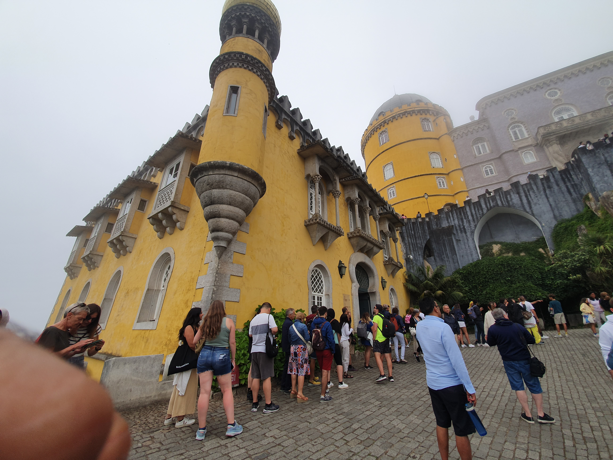
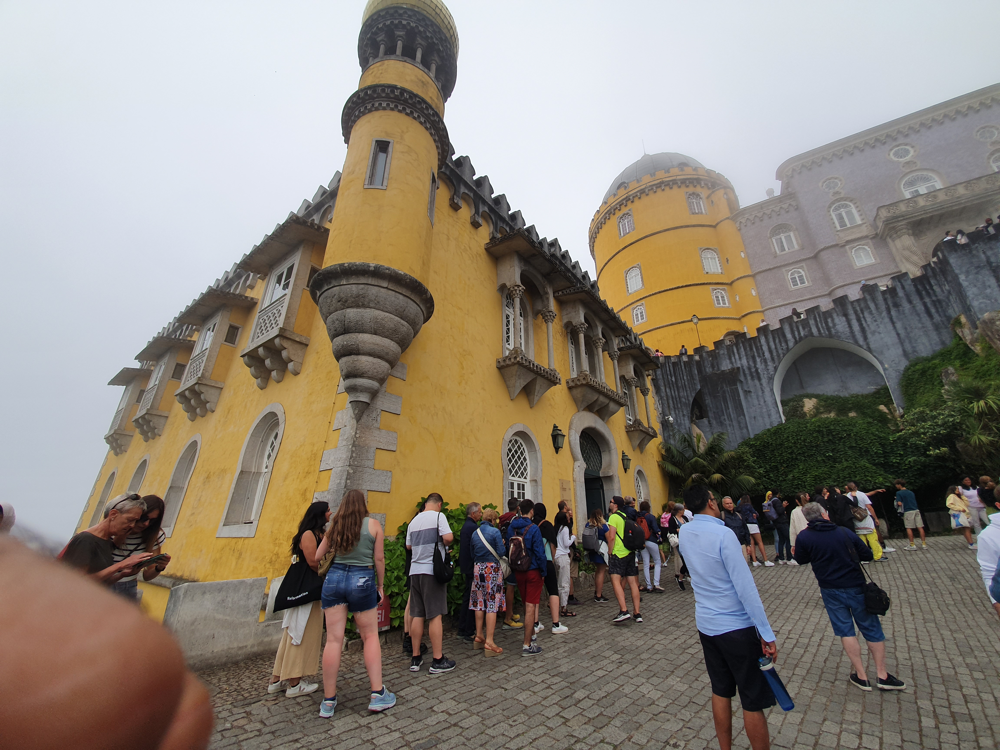
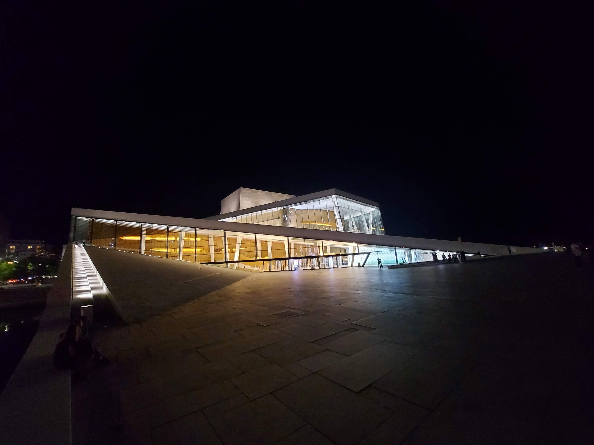
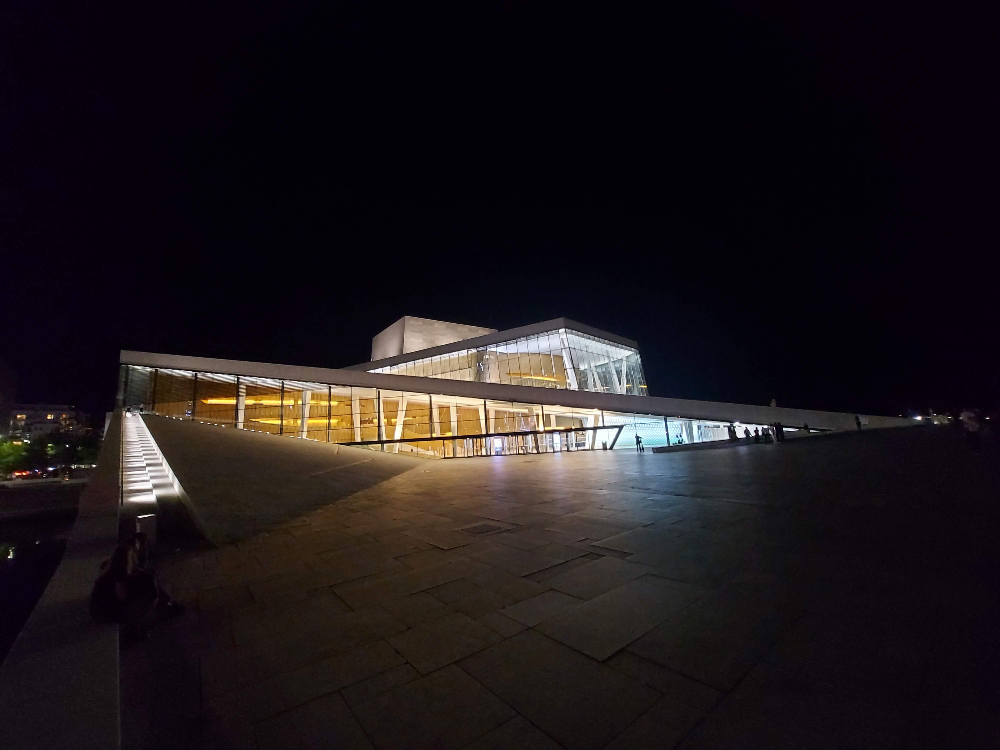

The Duomo
The Duomo in Milan, which is composed of pink-hued white marble from a specific quarry, is the largest and most intricate Gothic structure in Italy. At the top of the main spire, where the gleaming golden statue of the Madonnina is located. The cathedral is 157 meters long and 108.5 meters high.
Related Photos:
 

 
